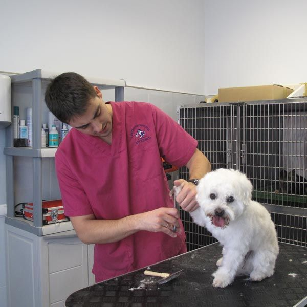
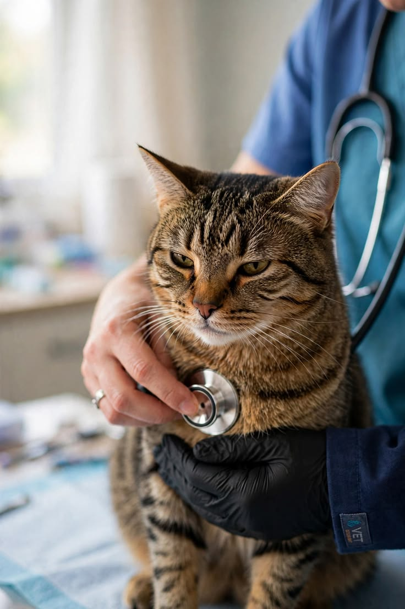
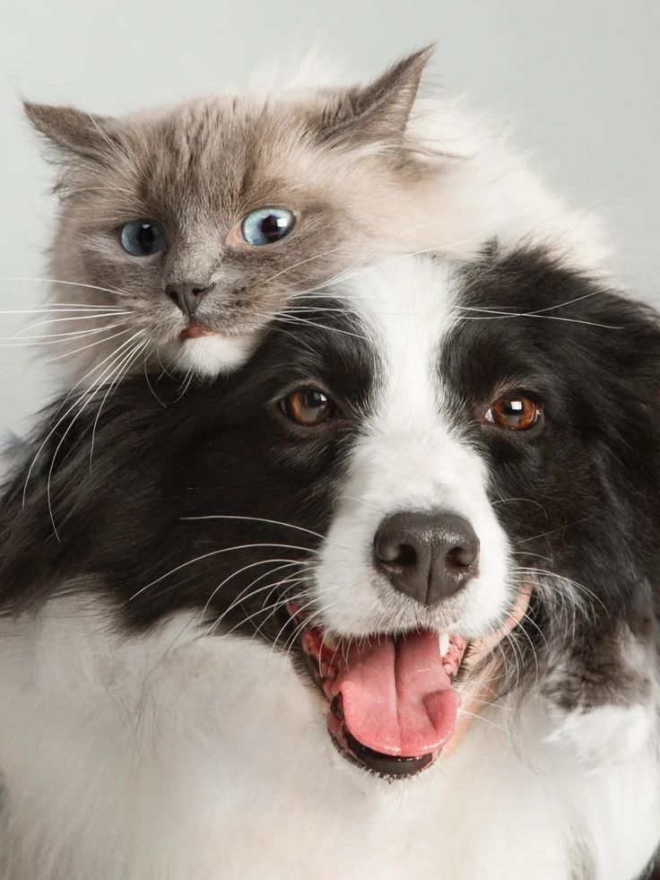

🩺
Atención profesional
Profesionales capacitados para atender las necesidades de perros y gatos.
En Veterinaria La Mary brindamos atención profesional, responsable y cercana para cuidar a quienes forman parte de tu familia.
Nuestro objetivo es brindar una atención de calidad para mejorar la salud y el bienestar de cada mascota.
Profesionales capacitados para atender las necesidades de perros y gatos.
Brindamos una atención cercana y responsable para cada mascota.
Trabajamos para garantizar la salud y calidad de vida de nuestros pacientes.
Conocé a algunos de los profesionales que forman parte de Veterinaria La Mary.

Atención clínica para perros y gatos.

Controles, vacunación y prevención.

Atención integral para perros y gatos.

En Veterinaria La Mary sabemos que cada mascota es única. Por eso ofrecemos una atención pensada para acompañarlos en todas las etapas de su vida.
Contactanos